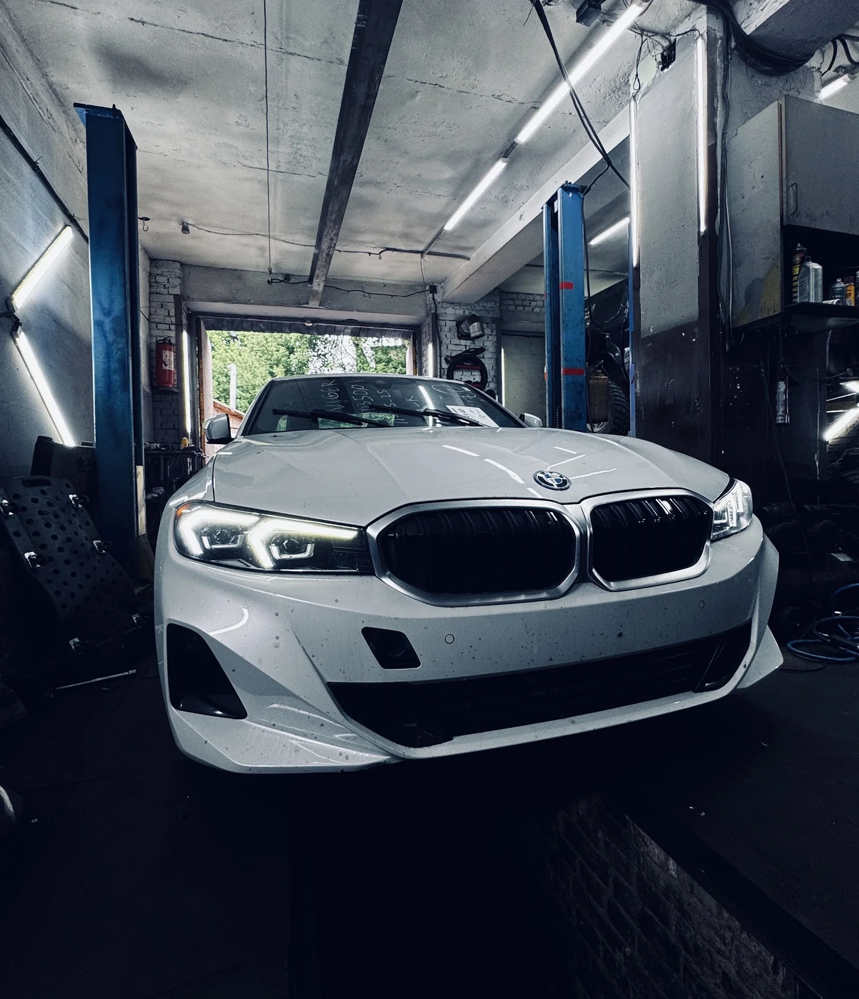
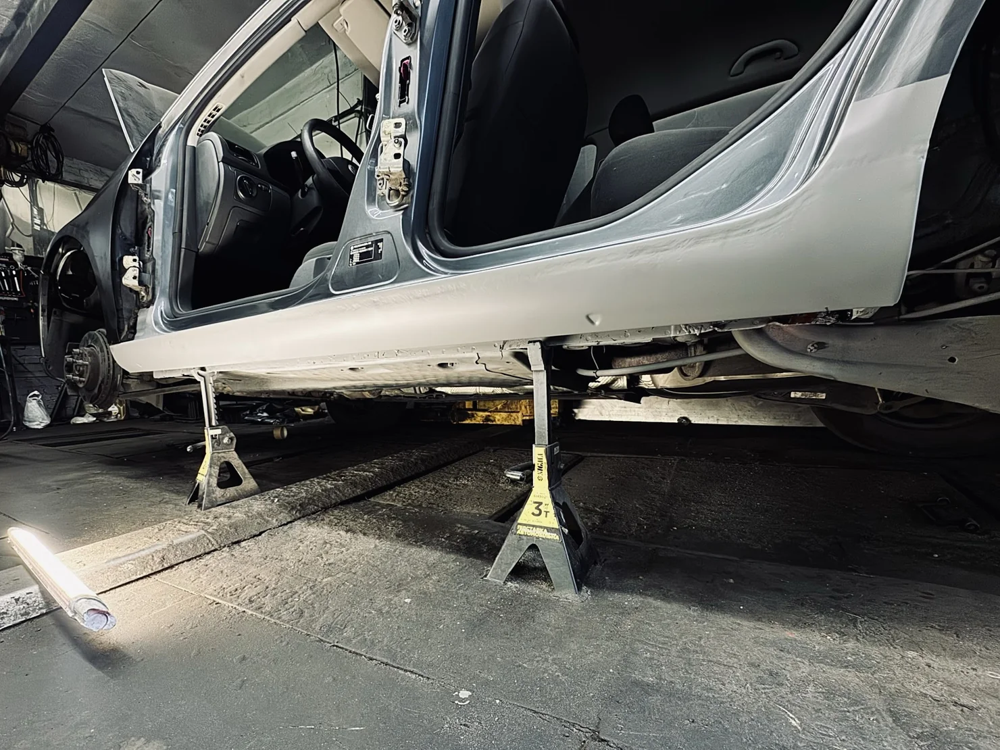
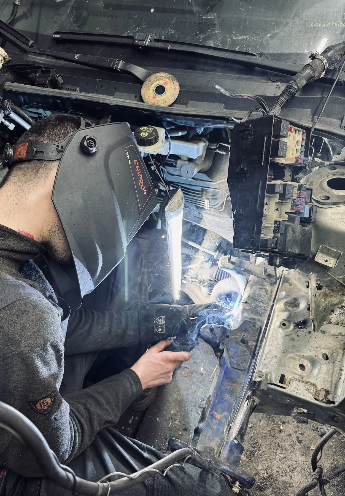
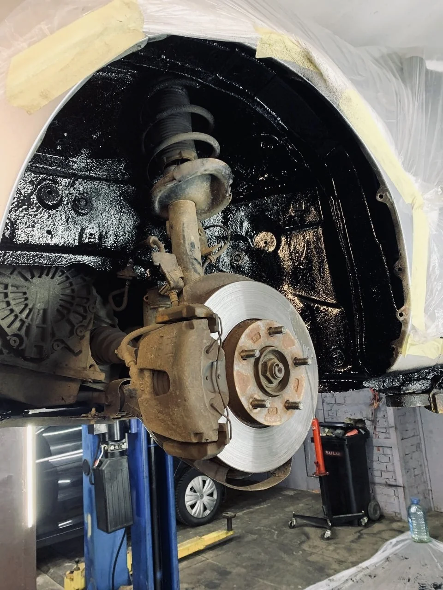

Київ · Павла Скоропадського, 63
Автосервіс
CRS.
Антикорозійна обробка днища й арок, зварювальні роботи та заміна мастила.

Послуги
Що робить
CRS.
Роботи з профілю майстерні та відгуків її клієнтів. Щоб узгодити обсяг і вартість для вашого авто, зателефонуйте.
Антикорозійна обробка
Обробка днища та колісних арок. У своєму відгуку Arrow GG описує саме ці роботи.
Відгук у Google КартахЗварювальні роботи
У відгуку про ремонт Mitsubishi Outlander власник згадує зварювання арки та латок.
Відгук у Google КартахРоботи з ходовою
Власник Outlander розповідає про заміну елементів ходової під час візиту до CRS.
Відгук у Google КартахЗаміна мастила
Заміна мастила входить до переліку послуг у профілі майстерні. Для запису зателефонуйте в CRS.
Профіль у Google КартахФотографії
У майстерні.






Відгуки
Слово клієнтам.
«Зробили просто ідеально, якістю виконання більш ніж задоволений!»
«Швидко і при цьому ретельно виконали роботу. Хороша ціна. Задоволений.»
«Чудово проконсультували: розказали що включає в себе обробка, які етапи, терміни виконання, діапазон ціни.»
Графік роботи
- Понеділок — п’ятниця
- 10:00–19:00
- Субота
- 12:00–18:00
- Неділя
- Зачинено